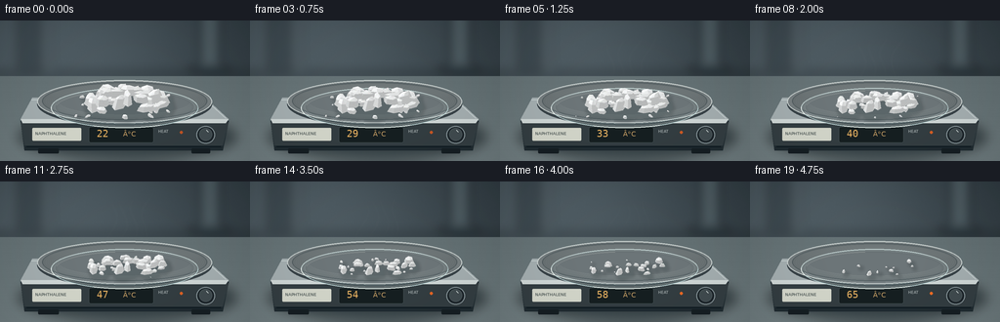
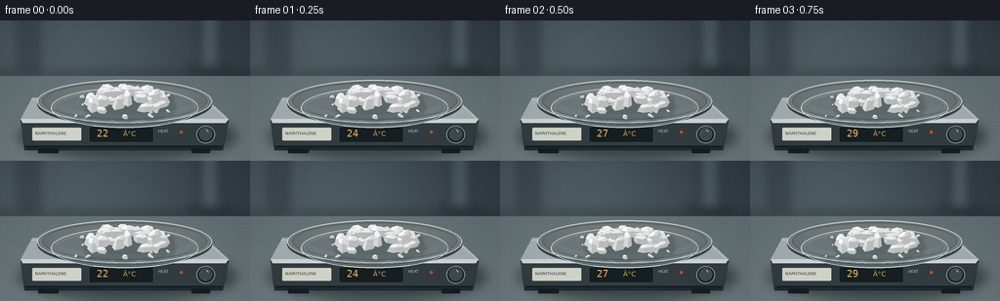

CODING AGENTS AS PIXEL WORLD MODELS
traex/GPT-6.1-Sol · phygen_117
点击播放 · 原生 RGB 像素
逐轮保存的候选
回放视频、检查图与代码变化。
每份候选均可单独播放。实际图片检查记录在下方工具轨迹中。
候选 01播放与检查图
点击播放 · 原生 RGB 像素

展开代码变化
--- 上一保存版本
+++ 本次保存版本
@@ -0,0 +1,232 @@
+"""Procedurally render a naphthalene sublimation timelapse, with no input images."""
+from pathlib import Path
+import math
+import json
+import shutil
+import subprocess
+import numpy as np
+from PIL import Image, ImageDraw, ImageFont, ImageFilter
+import artifact_io
+
+ROOT = Path(__file__).resolve().parent
+SPEC = json.loads((ROOT / 'task_spec.json').read_text())
+W, H, S = SPEC['width'], SPEC['height'], 3
+SW, SH = W*S, H*S
+rng = np.random.default_rng(117)
+
+def coords(box):
+ return tuple(float(v)*S for v in box)
+
+def ellipse(draw, box, **kw):
+ draw.ellipse(coords(box), **kw)
+
+def line(draw, pts, fill, width=1):
+ draw.line([(x*S,y*S) for x,y in pts], fill=fill, width=max(1,round(width*S)))
+
+def polygon(draw, pts, **kw):
+ draw.polygon([(x*S,y*S) for x,y in pts], **kw)
+
+def font(n, mono=False):
+ path='/usr/share/fonts/truetype/dejavu/DejaVuSansMono.ttf' if mono else '/usr/share/fonts/truetype/dejavu/DejaVuSans.ttf'
+ return ImageFont.truetype(path, round(n*S))
+
+# A shallow-depth-of-field laboratory background, all synthetic.
+y,x=np.mgrid[0:SH,0:SW]/S
+light=np.exp(-((x-65)/160)**2-((y-25)/95)**2)
+wall=np.zeros((SH,SW,3),dtype=np.float32)
+for c, (base, gain) in enumerate(zip((38,48,54),(38,41,42))):
+ wall[:,:,c]=base+gain*light+0.09*y
+wall += rng.normal(0,0.65,(SH,SW,1))
+bg=Image.fromarray(np.uint8(np.clip(wall,0,255)))
+objects=Image.new('RGBA',(SW,SH)); d=ImageDraw.Draw(objects)
+# Out-of-focus glassware and vertical lab equipment in the rear.
+d.rounded_rectangle(coords((204,-9,226,57)),radius=6*S,fill=(116,137,142,62))
+d.rectangle(coords((212,-4,216,53)),fill=(187,208,210,55))
+ellipse(d,(191,46,238,57),fill=(4,14,19,100))
+d.rounded_rectangle(coords((18,-12,42,52)),radius=3*S,fill=(27,37,43,85))
+d.rectangle(coords((49,-4,53,54)),fill=(164,182,181,37))
+d.rectangle(coords((0,53,256,57)),fill=(17,29,35,100))
+bg=Image.alpha_composite(bg.convert('RGBA'),objects.filter(ImageFilter.GaussianBlur(5*S)))
+# Satin benchtop with a gentle horizontal brushed texture.
+bench=Image.new('RGBA',(SW,SH)); a=np.zeros((SH,SW,4),dtype=np.uint8)
+noise=rng.normal(0,.6,(SH,SW))
+row_noise=rng.normal(0,.48,(SH,1))
+for c, base in enumerate((94,107,110)):
+ a[:,:,c]=np.clip(base + .12*(y-60)+9*np.exp(-((x-95)/150)**2)+noise+row_noise,0,255)
+a[:,:,3]=np.where(y>=57,255,0)
+bg=Image.alpha_composite(bg,Image.fromarray(a))
+# Broad physical contact shadow underneath the heating stage.
+shadow=Image.new('RGBA',(SW,SH)); d=ImageDraw.Draw(shadow)
+ellipse(d,(19,96,242,142),fill=(13,24,29,145))
+bg=Image.alpha_composite(bg,shadow.filter(ImageFilter.GaussianBlur(6*S)))
+d=ImageDraw.Draw(bg)
+# Chamfered laboratory hotplate: top, bevel, and front fascia.
+polygon(d,[(33,81),(209,81),(234,103),(228,133),(25,133),(21,103)],fill=(32,43,49))
+polygon(d,[(21,104),(234,104),(228,128),(25,128)],fill=(51,61,65))
+polygon(d,[(33,79),(210,79),(234,101),(21,101)],fill=(164,174,176))
+polygon(d,[(21,101),(234,101),(231,105),(23,105)],fill=(207,215,214))
+line(d,[(27,129),(226,129)],(17,29,35),1.5)
+line(d,[(32,81),(210,81),(231,100)],(201,211,211),.6)
+# Rubber feet.
+d.rounded_rectangle(coords((39,131,60,136)),radius=1*S,fill=(21,30,35))
+d.rounded_rectangle(coords((196,131,215,136)),radius=1*S,fill=(21,30,35))
+# Round ceramic heating surface in perspective.
+ellipse(d,(38,63,217,108),fill=(58,68,73))
+ellipse(d,(38,61,217,105),fill=(118,126,128),outline=(201,209,207),width=1*S)
+ellipse(d,(43,63,212,102),fill=(105,113,115),outline=(83,94,97),width=1*S)
+for k in range(7):
+ ellipse(d,(47+k*2,65+k*.55,208-k*2,100-k*.55),outline=(114+k,122+k,123+k),width=1)
+# Tiny instrument legends and a sample identification label.
+d.rounded_rectangle(coords((91,109,157,125)),radius=2*S,fill=(22,31,33),outline=(81,94,96),width=1)
+d.rounded_rectangle(coords((33,110,83,123)),radius=1*S,fill=(211,214,202))
+d.text((36*S,113*S),'NAPHTHALENE',font=font(4.4),fill=(49,60,61))
+d.text((162*S,111*S),'HEAT',font=font(4.1),fill=(186,195,194))
+ellipse(d,(201,108,220,126),fill=(28,37,42),outline=(133,146,150),width=1*S)
+ellipse(d,(204,110,217,123),fill=(64,75,79),outline=(95,107,110),width=1)
+line(d,[(211,112),(213,114)],(212,221,218),.8)
+# Transparent watch glass. Its far rim is behind the specimen.
+glass=Image.new('RGBA',(SW,SH)); d=ImageDraw.Draw(glass)
+ellipse(d,(52,69,203,110),fill=(172,196,199,27),outline=(189,214,215,155),width=1*S)
+ellipse(d,(56,71,199,106),fill=(128,157,165,14),outline=(205,226,226,88),width=1)
+ellipse(d,(59,73,196,104),fill=(157,183,186,20))
+d.arc(coords((52,69,203,110)),182,350,fill=(221,239,237,190),width=1*S)
+d.arc(coords((57,72,198,107)),189,262,fill=(255,255,246,100),width=1)
+bg=Image.alpha_composite(bg,glass)
+
+# Irregular hexagonal prismatic flakes; each keeps its material structure as it erodes.
+crystals=[]
+for i in range(51):
+ if i < 35:
+ xx=rng.uniform(-40,40); yy=rng.uniform(-15,16)
+ radius=(xx/44)**2+(yy/23)**2
+ zz=max(0,15*(1-radius))
+ size=rng.uniform(5.2,10.8)
+ else:
+ xx=rng.uniform(-56,56); yy=rng.uniform(-22,24)
+ zz=0
+ size=rng.uniform(1.1,3.3)
+ angle=rng.uniform(0,2*np.pi)
+ n=6
+ theta=np.arange(n)*2*np.pi/n+rng.uniform(-.18,.18,n)
+ rx=size*rng.uniform(.8,1.4); ry=size*rng.uniform(.45,.9)
+ hh=size*rng.uniform(.48,.98)
+ outline=np.stack([rx*np.cos(theta),ry*np.sin(theta)],axis=1)
+ rot=np.array([[np.cos(angle),-np.sin(angle)],[np.sin(angle),np.cos(angle)]])
+ outline=outline@rot.T
+ lower=np.c_[outline,np.zeros(n)]
+ top=np.c_[outline*rng.uniform(.55,.84)+rng.uniform(-1.1,1.1,(1,2)),hh*rng.uniform(.80,1.07,n)]
+ apex=np.r_[np.mean(top[:,:2],axis=0)+rng.uniform(-1,1,2),hh*1.12]
+ verts=np.vstack([lower,top,apex])
+ faces=[]
+ for j in range(n):
+ faces.append([j,(j+1)%n,(j+1)%n+n,j+n])
+ faces.append([j+n,(j+1)%n+n,2*n])
+ crystals.append(dict(center=np.array([xx,yy,zz]),verts=verts,faces=faces,
+ size=size,rate=rng.uniform(.85,1.25),tone=rng.uniform(-4,4),seed=i))
+
+# Camera looking down onto the sample; all lengths above are in display pixels.
+def project(v):
+ return np.stack([127.5+v[...,0],88+v[...,1]*.49-v[...,2]*.89],axis=-1)
+
+LIGHT=np.array([-.5,-.45,.85]); LIGHT/=np.linalg.norm(LIGHT)
+VIEW=np.array([0,.89,.49])
+
+def render(t):
+ im=bg.copy()
+ d=ImageDraw.Draw(im)
+ temp=round(22+43*t)
+ d.text((99*S,110*S),f'{temp:02d}',font=font(10,True),fill=(239,183,99))
+ d.text((126*S,112*S),'°C',font=font(7),fill=(204,163,102))
+ ellipse(d,(184,113,187,116),fill=(190+int(50*t),83+int(25*t),36))
+ # Surface erosion accelerates with temperature, with smaller flakes disappearing first.
+ objects=[]
+ for c in crystals:
+ erosion=7.8*(t**1.55)*c['rate']
+ scale=max(0,1-erosion/c['size'])
+ if scale<.08: continue
+ center=c['center'].copy()
+ center[2]*=max(0,1-t)**1.1
+ verts=c['verts']*scale+center
+ objects.append((c,verts,scale))
+ shadows=Image.new('RGBA',(SW,SH)); sd=ImageDraw.Draw(shadows)
+ for c,v,scale in objects:
+ cx,cy=project(c['center']*np.array([1,1,0]))
+ r=c['size']*scale
+ ellipse(sd,(cx-r*.9+2,cy-r*.38+1,cx+r*1.25+3,cy+r*.55+3),fill=(51,66,69,75))
+ im=Image.alpha_composite(im,shadows.filter(ImageFilter.GaussianBlur(1.6*S)))
+ # Depth-sorted actual mesh surfaces, shaded by their facet normals.
+ triangles=[]
+ for c,v,scale in objects:
+ for faceidx, inds in enumerate(c['faces']):
+ q=v[inds]
+ n=np.cross(q[1]-q[0],q[2]-q[0]); norm=np.linalg.norm(n)
+ if norm<1e-8: continue
+ n/=norm
+ # Winding side faces is outward, top faces are upward.
+ if np.dot(n,VIEW)<-.10: continue
+ brightness=184+65*max(0,float(n@LIGHT))+c['tone']
+ spec=8*max(0,float(n@((LIGHT+VIEW)/np.linalg.norm(LIGHT+VIEW))))**15
+ color=tuple(int(np.clip(brightness+spec+offset,0,255)) for offset in (3,5,5))
+ depth=float(np.mean(q,axis=0)@VIEW)
+ triangles.append((depth,project(q),color,c,faceidx,scale))
+ triangles.sort(key=lambda a:a[0])
+ d=ImageDraw.Draw(im)
+ for depth,p,color,c,fi,scale in triangles:
+ polygon(d,p,fill=color)
+ # White hairline fracture highlights and low-contrast, granular crystal faces.
+ rr=np.random.default_rng(c['seed']*100+fi)
+ if scale>.22:
+ for k in range(3):
+ weights=rr.random(len(p)); weights/=weights.sum()
+ xy=weights@p
+ col=tuple(min(255,val+int(rr.uniform(-12,7))) for val in color)+(160,)
+ rad=rr.uniform(.1,.3)*scale
+ ellipse(d,(xy[0]-rad,xy[1]-rad*.6,xy[0]+rad,xy[1]+rad*.6),fill=col)
+ if fi%3==0:
+ col=tuple(min(255,v+14) for v in color)
+ line(d,[p[0],p[1]],col,.23)
+ # Light reflected by the near lip of the glass, in front of the contents.
+ front=Image.new('RGBA',(SW,SH)); fd=ImageDraw.Draw(front)
+ fd.arc(coords((52,69,203,110)),0,180,fill=(198,222,221,168),width=1*S)
+ fd.arc(coords((54,70,201,108)),12,167,fill=(243,250,243,171),width=1)
+ fd.arc(coords((57,71,199,106)),25,148,fill=(193,222,223,115),width=1)
+ fd.arc(coords((52,69,203,110)),61,115,fill=(247,255,249,205),width=1*S)
+ fd.arc(coords((52,69,203,110)),161,183,fill=(250,255,250,190),width=1*S)
+ im=Image.alpha_composite(im,front)
+ # Very faint rising wisps communicate sublimation, not boiling or opaque smoke.
+ if t>.09:
+ vapor=Image.new('RGBA',(SW,SH)); vd=ImageDraw.Draw(vapor)
+ strength=(math.sin(math.pi*min(t,.95))*.75+.16)*min(1,t*4)
+ for j in range(4):
+ pts=[]
+ for z in np.linspace(0,1,90):
+ xx=109+12*j+math.sin(z*6.5-t*5+j)* (2+z*5)+z*8
+ yy=80-58*z-2*j
+ pts.append((xx,yy))
+ for k in range(len(pts)-1):
+ z=k/len(pts)
+ alpha=int(12*strength*(math.sin(z*math.pi)**.8))
+ line(vd,[pts[k],pts[k+1]],(223,233,232,alpha),1.3+z*2)
+ vapor=vapor.filter(ImageFilter.GaussianBlur(1.45*S))
+ im=Image.alpha_composite(im,vapor)
+ rgb=np.asarray(im.convert('RGB'),dtype=np.float32)
+ # Mild optical vignetting retains the laboratory photographic look.
+ vign=1-.09*((x-128)/170)**2-.06*((y-75)/115)**2
+ rgb*=vign[:,:,None]
+ result=Image.fromarray(np.uint8(np.clip(rgb,0,255))).resize((W,H),Image.Resampling.LANCZOS)
+ return np.asarray(result)
+
+
+def main():
+ frames=np.stack([render(i/(SPEC['frames']-1)) for i in range(SPEC['frames'])])
+ artifact_io.save(frames,ROOT)
+ ffmpeg=shutil.which('ffmpeg')
+ if ffmpeg:
+ subprocess.run([ffmpeg,'-y','-loglevel','error','-framerate',str(SPEC['fps']),
+ '-i',str(ROOT/'frames/%02d.png'),'-c:v','libx264','-crf','17',
+ '-pix_fmt','yuv420p','-movflags','+faststart',str(ROOT/'video.mp4')],check=True)
+ print(f'Saved {len(frames)} RGB frames: {frames.shape}, {frames.dtype}')
+ print('Mean successive frame changes:',np.mean(np.abs(np.diff(frames.astype(float),axis=0)),axis=(1,2,3)).round(3).tolist())
+
+if __name__=='__main__':
+ main()
候选 02播放与检查图
点击播放 · 原生 RGB 像素


展开代码变化
--- 上一保存版本
+++ 本次保存版本
@@ -136,7 +136,7 @@
d=ImageDraw.Draw(im)
temp=round(22+43*t)
d.text((99*S,110*S),f'{temp:02d}',font=font(10,True),fill=(239,183,99))
- d.text((126*S,112*S),'°C',font=font(7),fill=(204,163,102))
+ d.text((126*S,112*S),'\u00b0C',font=font(7),fill=(204,163,102))
ellipse(d,(184,113,187,116),fill=(190+int(50*t),83+int(25*t),36))
# Surface erosion accelerates with temperature, with smaller flakes disappearing first.
objects=[]
@@ -221,6 +221,12 @@
frames=np.stack([render(i/(SPEC['frames']-1)) for i in range(SPEC['frames'])])
artifact_io.save(frames,ROOT)
ffmpeg=shutil.which('ffmpeg')
+ if not ffmpeg:
+ try:
+ import imageio_ffmpeg
+ ffmpeg=imageio_ffmpeg.get_ffmpeg_exe()
+ except ImportError:
+ pass
if ffmpeg:
subprocess.run([ffmpeg,'-y','-loglevel','error','-framerate',str(SPEC['fps']),
'-i',str(ROOT/'frames/%02d.png'),'-c:v','libx264','-crf','17',
候选 03播放与检查图
可观测工具轨迹
实际执行的命令与返回图片。
命令 1exit 0
/bin/bash -lc 'ls -la && cat prompt.txt && cat GENERATION_RULES.md && cat task_spec.json'
命令 2exit 0
/bin/bash -lc "cat artifact_io.py && python - <<'PY'
import numpy, PIL
print('numpy', numpy.__version__, 'PIL', PIL.__version__)
PY"命令 3exit 0
/bin/bash -lc 'fc-list | head -8'
命令 4exit 0
/bin/bash -lc "cat > generate.py <<'PY'
\"\"\"Procedurally render a naphthalene sublimation timelapse, with no input images.\"\"\"
from pathlib import Path
import math
import json
import shutil
import subprocess
import numpy as np
from PIL import Image, ImageDraw, ImageFont, ImageFilter
import artifact_io
ROOT = Path(__file__).resolve().parent
SPEC = json.loads((ROOT / 'task_spec.json').read_text())
W, H, S = SPEC['width'], SPEC['height'], 3
SW, SH = W*S, H*S
rng = np.random.default_rng(117)
def coords(box):
return tuple(float(v)*S for v in box)
def ellipse(draw, box, **kw):
draw.ellipse(coords(box), **kw)
def line(draw, pts, fill, width=1):
draw.line([(x*S,y*S) for x,y in pts], fill=fill, width=max(1,round(width*S)))
def polygon(draw, pts, **kw):
draw.polygon([(x*S,y*S) for x,y in pts], **kw)
def font(n, mono=False):
path='/usr/share/fonts/truetype/dejavu/DejaVuSansMono.ttf' if mono else '/usr/share/fonts/truetype/dejavu/DejaVuSans.ttf'
return ImageFont.truetype(path, round(n*S))
# A shallow-depth-of-field laboratory background, all synthetic.
y,x=np.mgrid[0:SH,0:SW]/S
light=np.exp(-((x-65)/160)**2-((y-25)/95)**2)
wall=np.zeros((SH,SW,3),dtype=np.float32)
for c, (base, gain) in enumerate(zip((38,48,54),(38,41,42))):
wall[:,:,c]=base+gain*light+0.09*y
wall += rng.normal(0,0.65,(SH,SW,1))
bg=Image.fromarray(np.uint8(np.clip(wall,0,255)))
objects=Image.new('RGBA',(SW,SH)); d=ImageDraw.Draw(objects)
# Out-of-focus glassware and vertical lab equipment in the rear.
d.rounded_rectangle(coords((204,-9,226,57)),radius=6*S,fill=(116,137,142,62))
d.rectangle(coords((212,-4,216,53)),fill=(187,208,210,55))
ellipse(d,(191,46,238,57),fill=(4,14,19,100))
d.rounded_rectangle(coords((18,-12,42,52)),radius=3*S,fill=(27,37,43,85))
d.rectangle(coords((49,-4,53,54)),fill=(164,182,181,37))
d.rectangle(coords((0,53,256,57)),fill=(17,29,35,100))
bg=Image.alpha_composite(bg.convert('RGBA'),objects.filter(ImageFilter.GaussianBlur(5*S)))
# Satin benchtop with a gentle horizontal brushed texture.
bench=Image.new('RGBA',(SW,SH)); a=np.zeros((SH,SW,4),dtype=np.uint8)
noise=rng.normal(0,.6,(SH,SW))
row_noise=rng.normal(0,.48,(SH,1))
for c, base in enumerate((94,107,110)):
a[:,:,c]=np.clip(base + .12*(y-60)+9*np.exp(-((x-95)/150)**2)+noise+row_noise,0,255)
a[:,:,3]=np.where(y>=57,255,0)
bg=Image.alpha_composite(bg,Image.fromarray(a))
# Broad physical contact shadow underneath the heating stage.
shadow=Image.new('RGBA',(SW,SH)); d=ImageDraw.Draw(shadow)
ellipse(d,(19,96,242,142),fill=(13,24,29,145))
bg=Image.alpha_composite(bg,shadow.filter(ImageFilter.GaussianBlur(6*S)))
d=ImageDraw.Draw(bg)
# Chamfered laboratory hotplate: top, bevel, and front fascia.
polygon(d,[(33,81),(209,81),(234,103),(228,133),(25,133),(21,103)],fill=(32,43,49))
polygon(d,[(21,104),(234,104),(228,128),(25,128)],fill=(51,61,65))
polygon(d,[(33,79),(210,79),(234,101),(21,101)],fill=(164,174,176))
polygon(d,[(21,101),(234,101),(231,105),(23,105)],fill=(207,215,214))
line(d,[(27,129),(226,129)],(17,29,35),1.5)
line(d,[(32,81),(210,81),(231,100)],(201,211,211),.6)
# Rubber feet.
d.rounded_rectangle(coords((39,131,60,136)),radius=1*S,fill=(21,30,35))
d.rounded_rectangle(coords((196,131,215,136)),radius=1*S,fill=(21,30,35))
# Round ceramic heating surface in perspective.
ellipse(d,(38,63,217,108),fill=(58,68,73))
ellipse(d,(38,61,217,105),fill=(118,126,128),outline=(201,209,207),width=1*S)
ellipse(d,(43,63,212,102),fill=(105,113,115),outline=(83,94,97),width=1*S)
for k in range(7):
ellipse(d,(47+k*2,65+k*.55,208-k*2,100-k*.55),outline=(114+k,122+k,123+k),width=1)
# Tiny instrument legends and a sample identification label.
d.rounded_rectangle(coords((91,109,157,125)),radius=2*S,fill=(22,31,33),outline=(81,94,96),width=1)
d.rounded_rectangle(coords((33,110,83,123)),radius=1*S,fill=(211,214,202))
d.text((36*S,113*S),'NAPHTHALENE',font=font(4.4),fill=(49,60,61))
d.text((162*S,111*S),'HEAT',font=font(4.1),fill=(186,195,194))
ellipse(d,(201,108,220,126),fill=(28,37,42),outline=(133,146,150),width=1*S)
ellipse(d,(204,110,217,123),fill=(64,75,79),outline=(95,107,110),width=1)
line(d,[(211,112),(213,114)],(212,221,218),.8)
# Transparent watch glass. Its far rim is behind the specimen.
glass=Image.new('RGBA',(SW,SH)); d=ImageDraw.Draw(glass)
ellipse(d,(52,69,203,110),fill=(172,196,199,27),outline=(189,214,215,155),width=1*S)
ellipse(d,(56,71,199,106),fill=(128,157,165,14),outline=(205,226,226,88),width=1)
ellipse(d,(59,73,196,104),fill=(157,183,186,20))
d.arc(coords((52,69,203,110)),182,350,fill=(221,239,237,190),width=1*S)
d.arc(coords((57,72,198,107)),189,262,fill=(255,255,246,100),width=1)
bg=Image.alpha_composite(bg,glass)
# Irregular hexagonal prismatic flakes; each keeps its material structure as it erodes.
crystals=[]
for i in range(51):
if i < 35:
xx=rng.uniform(-40,40); yy=rng.uniform(-15,16)
radius=(xx/44)**2+(yy/23)**2
zz=max(0,15*(1-radius))
size=rng.uniform(5.2,10.8)
else:
xx=rng.uniform(-56,56); yy=rng.uniform(-22,24)
zz=0
size=rng.uniform(1.1,3.3)
angle=rng.uniform(0,2*np.pi)
n=6
theta=np.arange(n)*2*np.pi/n+rng.uniform(-.18,.18,n)
rx=size*rng.uniform(.8,1.4); ry=size*rng.uniform(.45,.9)
hh=size*rng.uniform(.48,.98)
outline=np.stack([rx*np.cos(theta),ry*np.sin(theta)],axis=1)
rot=np.array([[np.cos(angle),-np.sin(angle)],[np.sin(angle),np.cos(angle)]])
outline=outline@rot.T
lower=np.c_[outline,np.zeros(n)]
top=np.c_[outline*rng.uniform(.55,.84)+rng.uniform(-1.1,1.1,(1,2)),hh*rng.uniform(.80,1.07,n)]
apex=np.r_[np.mean(top[:,:2],axis=0)+rng.uniform(-1,1,2),hh*1.12]
verts=np.vstack([lower,top,apex])
faces=[]
for j in range(n):
faces.append([j,(j+1)%n,(j+1)%n+n,j+n])
faces.append([j+n,(j+1)%n+n,2*n])
crystals.append(dict(center=np.array([xx,yy,zz]),verts=verts,faces=faces,
size=size,rate=rng.uniform(.85,1.25),tone=rng.uniform(-4,4),seed=i))
# Camera looking down onto the sample; all lengths above are in display pixels.
def project(v):
return np.stack([127.5+v[...,0],88+v[...,1]*.49-v[...,2]*.89],axis=-1)
LIGHT=np.array([-.5,-.45,.85]); LIGHT/=np.linalg.norm(LIGHT)
VIEW=np.array([0,.89,.49])
def render(t):
im=bg.copy()
d=ImageDraw.Draw(im)
temp=round(22+43*t)
d.text((99*S,110*S),f'{temp:02d}',font=font(10,True),fill=(239,183,99))
d.text((126*S,112*S),'°C',font=font(7),fill=(204,163,102))
ellipse(d,(184,113,187,116),fill=(190+int(50*t),83+int(25*t),36))
# Surface erosion accelerates with temperature, with smaller flakes disappearing first.
objects=[]
for c in crystals:
erosion=7.8*(t**1.55)*c['rate']
scale=max(0,1-erosion/c['size'])
if scale<.08: continue
center=c['center'].copy()
center[2]*=max(0,1-t)**1.1
verts=c['verts']*scale+center
objects.append((c,verts,scale))
shadows=Image.new('RGBA',(SW,SH)); sd=ImageDraw.Draw(shadows)
for c,v,scale in objects:
cx,cy=project(c['center']*np.array([1,1,0]))
r=c['size']*scale
ellipse(sd,(cx-r*.9+2,cy-r*.38+1,cx+r*1.25+3,cy+r*.55+3),fill=(51,66,69,75))
im=Image.alpha_composite(im,shadows.filter(ImageFilter.GaussianBlur(1.6*S)))
# Depth-sorted actual mesh surfaces, shaded by their facet normals.
triangles=[]
for c,v,scale in objects:
for faceidx, inds in enumerate(c['faces']):
q=v[inds]
n=np.cross(q[1]-q[0],q[2]-q[0]); norm=np.linalg.norm(n)
if norm<1e-8: continue
n/=norm
# Winding side faces is outward, top faces are upward.
if np.dot(n,VIEW)<-.10: continue
brightness=184+65*max(0,float(n@LIGHT))+c['tone']
spec=8*max(0,float(n@((LIGHT+VIEW)/np.linalg.norm(LIGHT+VIEW))))**15
color=tuple(int(np.clip(brightness+spec+offset,0,255)) for offset in (3,5,5))
depth=float(np.mean(q,axis=0)@VIEW)
triangles.append((depth,project(q),color,c,faceidx,scale))
triangles.sort(key=lambda a:a[0])
d=ImageDraw.Draw(im)
for depth,p,color,c,fi,scale in triangles:
polygon(d,p,fill=color)
# White hairline fracture highlights and low-contrast, granular crystal faces.
rr=np.random.default_rng(c['seed']*100+fi)
if scale>.22:
for k in range(3):
weights=rr.random(len(p)); weights/=weights.sum()
xy=weights@p
col=tuple(min(255,val+int(rr.uniform(-12,7))) for val in color)+(160,)
rad=rr.uniform(.1,.3)*scale
ellipse(d,(xy[0]-rad,xy[1]-rad*.6,xy[0]+rad,xy[1]+rad*.6),fill=col)
if fi%3==0:
col=tuple(min(255,v+14) for v in color)
line(d,[p[0],p[1]],col,.23)
# Light reflected by the near lip of the glass, in front of the contents.
front=Image.new('RGBA',(SW,SH)); fd=ImageDraw.Draw(front)
fd.arc(coords((52,69,203,110)),0,180,fill=(198,222,221,168),width=1*S)
fd.arc(coords((54,70,201,108)),12,167,fill=(243,250,243,171),width=1)
fd.arc(coords((57,71,199,106)),25,148,fill=(193,222,223,115),width=1)
fd.arc(coords((52,69,203,110)),61,115,fill=(247,255,249,205),width=1*S)
fd.arc(coords((52,69,203,110)),161,183,fill=(250,255,250,190),width=1*S)
im=Image.alpha_composite(im,front)
# Very faint rising wisps communicate sublimation, not boiling or opaque smoke.
if t>.09:
vapor=Image.new('RGBA',(SW,SH)); vd=ImageDraw.Draw(vapor)
strength=(math.sin(math.pi*min(t,.95))*.75+.16)*min(1,t*4)
for j in range(4):
pts=[]
for z in np.linspace(0,1,90):
xx=109+12*j+math.sin(z*6.5-t*5+j)* (2+z*5)+z*8
yy=80-58*z-2*j
pts.append((xx,yy))
for k in range(len(pts)-1):
z=k/len(pts)
alpha=int(12*strength*(math.sin(z*math.pi)**.8))
line(vd,[pts[k],pts[k+1]],(223,233,232,alpha),1.3+z*2)
vapor=vapor.filter(ImageFilter.GaussianBlur(1.45*S))
im=Image.alpha_composite(im,vapor)
rgb=np.asarray(im.convert('RGB'),dtype=np.float32)
# Mild optical vignetting retains the laboratory photographic look.
vign=1-.09*((x-128)/170)**2-.06*((y-75)/115)**2
rgb*=vign[:,:,None]
result=Image.fromarray(np.uint8(np.clip(rgb,0,255))).resize((W,H),Image.Resampling.LANCZOS)
return np.asarray(result)
def main():
frames=np.stack([render(i/(SPEC['frames']-1)) for i in range(SPEC['frames'])])
artifact_io.save(frames,ROOT)
ffmpeg=shutil.which('ffmpeg')
if ffmpeg:
subprocess.run([ffmpeg,'-y','-loglevel','error','-framerate',str(SPEC['fps']),
'-i',str(ROOT/'frames/%02d.png'),'-c:v','libx264','-crf','17',
'-pix_fmt','yuv420p','-movflags','+faststart',str(ROOT/'video.mp4')],check=True)
print(f'Saved {len(frames)} RGB frames: {frames.shape}, {frames.dtype}')
print('Mean successive frame changes:',np.mean(np.abs(np.diff(frames.astype(float),axis=0)),axis=(1,2,3)).round(3).tolist())
if __name__=='__main__':
main()
PY
python generate.py"命令 5exit 127
/bin/bash -lc "python - <<'PY'
p='generate.py'
s=open(p).read().replace(\"'ðC'\", \"'\\\\u00b0C'\")
open(p,'w').write(s)
PY
python generate.py
python - <<'PY'
from pathlib import Path
import numpy as np
from PIL import Image
p=Path('.')
a=np.load(p/'pixels.npz')['pixels']
assert a.shape==(144,256,20)
f=list((p/'frames').glob('*.png'))
assert len(f)==20
assert all(Image.open(x).mode=='RGB' and Image.open(x).size==(256,144) for x in f)
for name in ['generate.py','pixels.npz','index.html','inspection.png','transition_check.png','video.mp4']:
x=p/name
print(name, x.stat().st_size, 'bytes')
PY
ffprobe -v error -show_entries stream=width,height,r_frame_rate,nb_frames:format=duration -of json video.mp4"命令 6exit 0
/bin/bash -lc "python - <<'PY'
import importlib.util
for m in ['imageio_ffmpeg','av','cv2']:
print(m, bool(importlib.util.find_spec(m)))
for line in open('generate.py'):
if '126*S' in line: print(repr(line))
PY"命令 7exit 0
/bin/bash -lc "python - <<'PY'
p='generate.py'
s=open(p).read().replace(\"'\\u00c2\\u00b0C'\", \"'\\\\u00b0C'\")
s=s.replace(\" ffmpeg=shutil.which('ffmpeg')\\n\", \" ffmpeg=shutil.which('ffmpeg')\\n if not ffmpeg:\\n try:\\n import imageio_ffmpeg\\n ffmpeg=imageio_ffmpeg.get_ffmpeg_exe()\\n except ImportError:\\n pass\\n\")
open(p,'w').write(s)
PY
python generate.py
python - <<'PY'
from pathlib import Path
import numpy as np
from PIL import Image
import av
p=Path('.')
a=np.load(p/'pixels.npz')['pixels']; assert a.shape==(144,256,20)
f=list((p/'frames').glob('*.png')); assert len(f)==20
assert all(Image.open(x).mode=='RGB' and Image.open(x).size==(256,144) for x in f)
v=av.open(str(p/'video.mp4')); stream=v.streams.video[0]
frames=list(v.decode(video=0))
assert len(frames)==20 and stream.width==256 and stream.height==144
assert float(stream.average_rate)==4.0
print('Verified 20 RGB source frames and MP4: 256Ã144, 4 fps, 5 seconds.')
for name in ['generate.py','pixels.npz','index.html','video.mp4']:
print(name,(p/name).stat().st_size,'bytes')
PY"保存候选 3 份；完成命令 7 次；可验证图片返回 0 张。原始 API 响应与完整日志保留在本地。